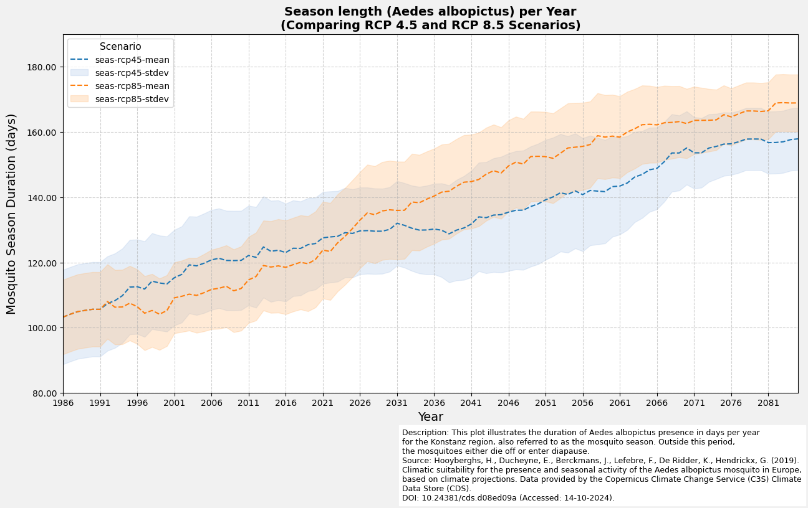

SIS Health Vector
Eignung für das Vorkommen und die saisonale Aktivität der Tigermücke (Aedes albopictus) in Europa
Dieses Skript verarbeitet den Datensatz SIS Health Vector aus dem Copernics Climate Data Store. Der Datensatz enthält Informationen zu der Eignung der Umweltbedingungen sowie der saisonalen Aktivität der Tigermücke. Der Datensatz wurde im Rahmen des C3S European Health Service entwickelt. Die Informationen sind für unterschiedliche zukünftige Zeiträume und Klimawandelszenarien verfügbar.
Informationen zum Datensatz:
Source: SIS Health Vector
Author: T. Tewes (Stadt Konstanz)
Resolution: 0.1° x 0.1°
Notebook-Version: 1.1 (Updated: December 02, 2024)
1. Specifying the paths and working directories
import os
''' ---- Hier die Verzeichnisse angeben ---- '''
download_folder = r".\data\sis-health-vector\download"
working_folder = r".\data\sis-health-vector\working"
geotiff_folder = r".\data\sis-health-vector\geotiff"
csv_folder = r".\data\sis-health-vector\csv"
output_folder = r".\data\sis-health-vector\output"
''' ----- Ende der Eingaben ---- '''
os.makedirs(download_folder, exist_ok=True)
os.makedirs(working_folder, exist_ok=True)
os.makedirs(geotiff_folder, exist_ok=True)
os.makedirs(csv_folder, exist_ok=True)
os.makedirs(output_folder, exist_ok=True)
2. Download and Extract Dataset
2.1 API Authentication
import cdsapi
def main():
api_key = "fdae60fd-35d4-436f-825c-c63fedab94a4"
api_url = "https://cds.climate.copernicus.eu/api"
client = cdsapi.Client(url=api_url, key=api_key)
return client
2.2 Request Definition and Download
# Define additional request fields to ensure the request stays within the file size limit.
# These coordinates were obtained using the BBox Extractor tool:
# https://str-ucture.github.io/bbox-extractor/
bbox_wgs84_deutschland = [56.0, 5.8, 47.2, 15.0] # North, West, South, East
bbox_wgs84_konstanz = [47.9, 8.9, 47.6, 9.3]
# Alternatively, use a shapefile for precise geographic filtering
import geopandas as gpd
import math
# Example: Load shapefile of Konstanz (WGS84 projection)
de_shapefile = r"./shapefiles/de_boundary.shp"
de_gdf = gpd.read_file(de_shapefile)
de_bounds = de_gdf.total_bounds
# Adjust and buffer
de_bounds_adjusted = [(math.floor(de_bounds[0]* 10)/10)-0.1,
(math.floor(de_bounds[1]* 10)/10)-0.1,
(math.ceil(de_bounds[2]* 10)/10)+0.1,
(math.ceil(de_bounds[3]* 10)/10)+0.1]
bbox_de_bounds_adjusted = [de_bounds_adjusted[3], de_bounds_adjusted[0],
de_bounds_adjusted[1], de_bounds_adjusted[2]]
dataset = "sis-health-vector"
request = {
"variable": [
"suitability",
"season_length"
],
"experiment": [
"rcp4_5",
"rcp8_5"
],
"ensemble_statistic": [
"ensemble_members_average",
"ensemble_members_standard_deviation"
],
"area": bbox_de_bounds_adjusted
}
# Run this cell to download the dataset:
def main_retrieve():
dataset_filename = f"{dataset}.zip"
dataset_filepath = os.path.join(download_folder, dataset_filename)
# Download the dataset only if the dataset has not been downloaded before
if not os.path.isfile(dataset_filepath):
# Download the dataset with the defined request parameters
client.retrieve(dataset, request, dataset_filepath)
else:
print("Dataset already downloaded.")
if __name__ == "__main__":
client = main()
main_retrieve()
2025-03-05 15:40:08,162 INFO [2024-09-26T00:00:00] Watch our [Forum](https://forum.ecmwf.int/) for Announcements, news and other discussed topics.
2025-03-05 15:40:08,164 WARNING [2024-06-16T00:00:00] CDS API syntax is changed and some keys or parameter names may have also changed. To avoid requests failing, please use the "Show API request code" tool on the dataset Download Form to check you are using the correct syntax for your API request.
Dataset already downloaded.
2.3 Extract the Zip folder
import zipfile
dataset_filename = f"{dataset}.zip"
dataset_filepath = os.path.join(download_folder, dataset_filename)
# Extract the zip file
try:
os.makedirs(working_folder, exist_ok=True)
if not os.listdir(working_folder):
with zipfile.ZipFile(dataset_filepath, 'r') as zip_ref:
zip_ref.extractall(working_folder)
print(f"Successfully extracted files to: {working_folder}")
else:
print("Folder is not empty. Skipping extraction.")
except FileNotFoundError:
print(f"Error: The file {dataset_filepath} was not found.")
except zipfile.BadZipFile:
print(f"Error: The file {dataset_filepath} is not a valid zip file.")
except Exception as e:
print(f"An unexpected error occurred: {e}")
Folder is not empty. Skipping extraction.
3. Read the netCDF file and print the metadata
import re
import pandas as pd
def meta(filename):
match = re.search(r'mosquito_(suit|seas)_(rcp\d{2})_(\w+)_v(\d+\.\d+)\.', filename)
if not match:
raise ValueError("the given filename does not fit the expected naming scheme")
var = match.group(1)
return dict(
filename=filename,
path=os.path.join(working_folder, filename),
variable=var,
variable_name="season_length" if var == 'seas' else "suitability",
rcp = match.group(2),
statistic = match.group(3),
version = match.group(4),
)
# Create DataFrame from the list of files inside the extracted directory
nc_files = [meta(f) for f in os.listdir(working_folder) if f.endswith('.nc')]
df_nc_files = pd.DataFrame.from_dict(nc_files)
# Modify pandas display options
pd.options.display.max_colwidth = 30
# Display the DataFrame
df_nc_files.head().loc[:, df_nc_files.columns != 'path']
| filename | variable | variable_name | rcp | statistic | version | |
|---|---|---|---|---|---|---|
| 0 | mosquito_seas_rcp45_mean_v... | seas | season_length | rcp45 | mean | 1.0 |
| 1 | mosquito_seas_rcp45_stdev_... | seas | season_length | rcp45 | stdev | 1.0 |
| 2 | mosquito_seas_rcp85_mean_v... | seas | season_length | rcp85 | mean | 1.0 |
| 3 | mosquito_seas_rcp85_stdev_... | seas | season_length | rcp85 | stdev | 1.0 |
| 4 | mosquito_suit_rcp45_mean_v... | suit | suitability | rcp45 | mean | 1.0 |
import netCDF4 as nc
seen_variables = set()
for i, nc_file in enumerate(nc_files):
variable_name = nc_file['variable']
if variable_name in seen_variables:
continue
# Open the NetCDF file in read mode
nc_dataset = nc.Dataset(nc_file['path'], mode='r')
# List all variables in the dataset
variables_list = nc_dataset.variables.keys()
print(f"{i+1}. {variable_name}: Available variables: {list(variables_list)}")
# Add the variable name to the seen set
seen_variables.add(variable_name)
1. seas: Available variables: ['season_length', 'height', 'lat', 'lon', 'time']
5. suit: Available variables: ['suitability', 'height', 'lat', 'lon', 'time']
seen_variables = set()
for i, nc_file in enumerate(nc_files):
variable_name = nc_file['variable_name']
if variable_name in seen_variables:
continue
nc_dataset = nc.Dataset(nc_file['path'], mode='r')
variable_data = nc_dataset[variable_name]
# Generate summary of the primary variable
summary = {
"Variable Name": variable_name,
"Data Type": variable_data.dtype,
"Shape": variable_data.shape,
"Variable Info": f"{variable_name}({', '.join(variable_data.dimensions)})",
"Units": getattr(variable_data, "units", "N/A"),
"Long Name": getattr(variable_data, "long_name", "N/A"),
}
# Display dataset summary as a DataFrame for better visualization
nc_summary = pd.DataFrame(list(summary.items()), columns=['Description', 'Remarks'])
# Display the summary DataFrame
print(f"{i+1}. {nc_file['variable']}:")
display(nc_summary)
# Add the variable name to the seen set
seen_variables.add(variable_name)
1. seas:
| Description | Remarks | |
|---|---|---|
| 0 | Variable Name | season_length |
| 1 | Data Type | float32 |
| 2 | Shape | (100, 82, 95) |
| 3 | Variable Info | season_length(time, lat, lon) |
| 4 | Units | 1 |
| 5 | Long Name | Ensemble members average o... |
5. suit:
| Description | Remarks | |
|---|---|---|
| 0 | Variable Name | suitability |
| 1 | Data Type | float32 |
| 2 | Shape | (100, 82, 95) |
| 3 | Variable Info | suitability(time, lat, lon) |
| 4 | Units | 1 |
| 5 | Long Name | Ensemble members average o... |
4. Export Dataset to CSV
import numpy as np
import netCDF4 as nc
def netcdf_to_dataframe(
nc_file,
bounding_box=None):
"""
Converts a netCDF file to a DataFrame, optionally filtering by a bounding box.
Parameters:
nc_file (dict): Dictionary with keys 'filename', 'path', 'variable', 'variable_name', 'rcp', 'statistic', 'version'.
bbox (list): Bounding box as [lon_min, lat_min, lon_max, lat_max] (optional).
Returns:
pd.DataFrame: DataFrame with time, latitude, longitude, and the variable's values.
"""
try:
# Open the netCDF file
nc_dataset = nc.Dataset(nc_file['path'], 'r')
lon = nc_dataset['lon'][:]
lat = nc_dataset['lat'][:]
# Retrieve the variable name
variable = nc_file['variable']
if variable == 'suit':
variable_name = 'suitability'
elif variable == 'seas':
variable_name = 'season_length'
else:
raise ValueError(f"Unexpected variable: {variable}")
# Extract time variable and convert it to readable dates
time_var = nc_dataset.variables['time']
time_units = time_var.units
time_calendar = getattr(time_var, "calendar", "standard")
cftime = nc.num2date(time_var[:], units=time_units, calendar=time_calendar)
# Extract temperature/variable data
variable_data = nc_dataset.variables[variable_name][:]
# Filter by bounding box if provided
if bounding_box:
lon_min, lat_min, lon_max, lat_max = bounding_box
indices_lat = np.where((lat >= lat_min) & (lat <= lat_max))[0]
indices_lon = np.where((lon >= lon_min) & (lon <= lon_max))[0]
start_lat, end_lat = indices_lat[0], indices_lat[-1] + 1
start_lon, end_lon = indices_lon[0], indices_lon[-1] + 1
filtered_lat = lat[start_lat:end_lat]
filtered_lon = lon[start_lon:end_lon]
variable_data_subset = variable_data[:, start_lat:end_lat, start_lon:end_lon]
else:
filtered_lat = lat
filtered_lon = lon
variable_data_subset = variable_data
# Create a column name for the variable
variable_column_name = f"{variable}-{nc_file['rcp']}-{nc_file['statistic']}"
# Create rows for the DataFrame
rows = []
for t in range(variable_data_subset.shape[0]):
for i in range(variable_data_subset.shape[1]):
for j in range(variable_data_subset.shape[2]):
if not np.ma.is_masked(variable_data_subset[t, i, j]):
rows.append({
'time': cftime[t],
'latitude': filtered_lat[i],
'longitude': filtered_lon[j],
variable_column_name: variable_data_subset[t, i, j]
})
# Create a DataFrame from the rows
df = pd.DataFrame(rows)
df['time'] = pd.to_datetime(df['time'].map(str))
df['latitude'] = pd.to_numeric(df['latitude'])
df['longitude'] = pd.to_numeric(df['longitude'])
df[variable_column_name] = pd.to_numeric(df[variable_column_name])
# Set the index to time, latitude, and longitude
return df.set_index(['time', 'latitude', 'longitude'])
except KeyError as e:
raise ValueError(f"KeyError: Missing required variable in the netCDF file: {e}")
finally:
# Ensure the dataset is closed
nc_dataset.close()
4.1 Create Individual DataFrame and Export as Individual CSV files
# Create individual DataFrame and Export as individual CSV files
for nc_file in nc_files:
csv_filename = f"mosquito_{nc_file['variable']}_{nc_file['rcp']}_{nc_file['statistic']}.csv"
csv_path = os.path.join(csv_folder, csv_filename)
if not os.path.isfile(csv_path):
df = netcdf_to_dataframe(nc_file, bounding_box=None)
df.to_csv(csv_path)
print(f"Data exported successfully to {csv_path}")
else:
print(f"File already exists at {csv_path}. Skipping export.")
df = pd.read_csv(csv_path).set_index(['time', 'latitude', 'longitude'])
# Modify display format for numbers in the DataFrames
pd.options.display.float_format = '{:,.2f}'.format
# Display DataFrame
df
File already exists at .\data\sis-health-vector\csv\mosquito_seas_rcp45_mean.csv. Skipping export.
File already exists at .\data\sis-health-vector\csv\mosquito_seas_rcp45_stdev.csv. Skipping export.
File already exists at .\data\sis-health-vector\csv\mosquito_seas_rcp85_mean.csv. Skipping export.
File already exists at .\data\sis-health-vector\csv\mosquito_seas_rcp85_stdev.csv. Skipping export.
File already exists at .\data\sis-health-vector\csv\mosquito_suit_rcp45_mean.csv. Skipping export.
File already exists at .\data\sis-health-vector\csv\mosquito_suit_rcp45_stdev.csv. Skipping export.
File already exists at .\data\sis-health-vector\csv\mosquito_suit_rcp85_mean.csv. Skipping export.
File already exists at .\data\sis-health-vector\csv\mosquito_suit_rcp85_stdev.csv. Skipping export.
| suit-rcp85-stdev | |||
|---|---|---|---|
| time | latitude | longitude | |
| 1986-01-01 | 47.10 | 5.70 | 2.63 |
| 5.80 | 3.02 | ||
| 5.90 | 3.11 | ||
| 6.00 | 3.57 | ||
| 6.10 | 3.53 | ||
| ... | ... | ... | ... |
| 2085-01-01 | 55.20 | 14.70 | 9.20 |
| 14.80 | 9.65 | ||
| 14.90 | 8.25 | ||
| 15.00 | 7.34 | ||
| 15.10 | 6.53 |
729100 rows × 1 columns
4.2 Create DataFrame and Export as merged CSV file
from tqdm.notebook import tqdm
csv_filename = 'sis-health-vector-merged.csv.zip'
csv_path = os.path.join(csv_folder, csv_filename)
if not os.path.isfile(csv_path):
dataframes = [netcdf_to_dataframe(nc_file) for nc_file in tqdm(nc_files)]
df_merged = pd.concat(dataframes, axis=1)
df_merged.to_csv(csv_path, sep=',', encoding='utf8', compression='zip')
else:
print(f"File already exists at {csv_path}. Skipping export.")
print("Reading existing CSV file...")
df_merged = pd.read_csv(csv_path).set_index(['time', 'latitude', 'longitude'])
# Display DataFrame
df_merged
File already exists at .\data\sis-health-vector\csv\sis-health-vector-merged.csv.zip. Skipping export.
Reading existing CSV file...
| seas-rcp45-mean | seas-rcp45-stdev | seas-rcp85-mean | seas-rcp85-stdev | suit-rcp45-mean | suit-rcp45-stdev | suit-rcp85-mean | suit-rcp85-stdev | |||
|---|---|---|---|---|---|---|---|---|---|---|
| time | latitude | longitude | ||||||||
| 1986-01-01 | 47.10 | 5.70 | 137.85 | 8.88 | 137.85 | 8.32 | 83.47 | 2.55 | 83.47 | 2.63 |
| 5.80 | 134.25 | 7.83 | 134.25 | 8.09 | 80.93 | 2.91 | 80.93 | 3.02 | ||
| 5.90 | 127.43 | 10.29 | 127.43 | 9.92 | 76.16 | 3.28 | 76.16 | 3.11 | ||
| 6.00 | 118.44 | 13.42 | 118.44 | 11.70 | 69.44 | 3.90 | 69.44 | 3.57 | ||
| 6.10 | 103.06 | 13.96 | 103.06 | 12.18 | 61.91 | 3.89 | 61.91 | 3.53 | ||
| ... | ... | ... | ... | ... | ... | ... | ... | ... | ... | ... |
| 2085-01-01 | 55.20 | 14.70 | 102.34 | 20.69 | 135.23 | 18.08 | 66.27 | 10.68 | 83.59 | 9.20 |
| 14.80 | 94.36 | 22.07 | 131.20 | 20.02 | 63.85 | 10.38 | 81.74 | 9.65 | ||
| 14.90 | 91.52 | 21.24 | 128.82 | 20.77 | 63.01 | 8.24 | 81.60 | 8.25 | ||
| 15.00 | 94.66 | 19.00 | 129.81 | 19.47 | 65.55 | 7.65 | 83.25 | 7.34 | ||
| 15.10 | 104.35 | 17.06 | 138.60 | 14.97 | 68.65 | 7.68 | 85.24 | 6.53 |
779000 rows × 8 columns
4.2 Filter by Area, Create DataFrame and Export as merged CSV file
# Define additional request fields to ensure the request stays within the file size limit.
# These coordinates were obtained using the BBox Extractor tool:
# https://str-ucture.github.io/bbox-extractor/
# Bounding box for the Konstanz region (WGS84 projection):
bbox_wgs84_konstanz = [47.9, 8.9, 47.6, 9.3] # Format: [North, West, South, East]
bbox_wgs84_konstanz_standard = [9.0, 47.6, 9.3, 47.8] # Standard format: [West, South, East, North]
csv_filename = "sis-health-vector-merged-subset.csv.zip"
csv_path = os.path.join(csv_folder, csv_filename)
if not os.path.isfile(csv_path):
dataframes = [netcdf_to_dataframe(nc_file, bounding_box=bbox_wgs84_konstanz_standard) for nc_file in tqdm(nc_files)]
df_merged_subset = pd.concat(dataframes, axis=1)
df_merged_subset.to_csv(csv_path, sep=',', encoding='utf8', compression='zip')
else:
print(f"File already exists at {csv_path}. Skipping export.")
df_merged_subset = pd.read_csv(csv_path).set_index(['time', 'latitude', 'longitude'])
# Display DataFrame
df_merged_subset
File already exists at .\data\sis-health-vector\csv\sis-health-vector-merged-subset.csv.zip. Skipping export.
| seas-rcp45-mean | seas-rcp45-stdev | seas-rcp85-mean | seas-rcp85-stdev | suit-rcp45-mean | suit-rcp45-stdev | suit-rcp85-mean | suit-rcp85-stdev | |||
|---|---|---|---|---|---|---|---|---|---|---|
| time | latitude | longitude | ||||||||
| 1986-01-01 | 47.60 | 9.00 | 106.96 | 12.80 | 106.96 | 10.82 | 74.46 | 3.40 | 74.46 | 3.24 |
| 9.10 | 109.16 | 12.32 | 109.16 | 10.61 | 76.52 | 2.88 | 76.52 | 2.79 | ||
| 9.20 | 111.20 | 12.67 | 111.20 | 11.31 | 77.60 | 2.58 | 77.60 | 2.49 | ||
| 47.70 | 9.00 | 105.13 | 12.74 | 105.13 | 9.80 | 72.90 | 3.08 | 72.90 | 2.89 | |
| 9.10 | 105.82 | 13.31 | 105.82 | 10.28 | 75.07 | 2.67 | 75.07 | 2.55 | ||
| ... | ... | ... | ... | ... | ... | ... | ... | ... | ... | ... |
| 2085-01-01 | 47.70 | 9.10 | 158.96 | 8.82 | 169.36 | 8.41 | 92.85 | 2.52 | 93.04 | 5.05 |
| 9.20 | 159.18 | 8.65 | 169.73 | 8.56 | 93.56 | 2.37 | 93.12 | 5.05 | ||
| 47.80 | 9.00 | 155.63 | 11.82 | 168.53 | 8.90 | 91.11 | 3.42 | 95.61 | 2.51 | |
| 9.10 | 155.20 | 11.29 | 166.86 | 9.72 | 91.48 | 3.20 | 95.51 | 2.61 | ||
| 9.20 | 154.19 | 11.30 | 166.15 | 10.07 | 91.22 | 3.22 | 95.47 | 2.75 |
900 rows × 8 columns
5. Export Dataset to GeoTIFF
5.1 Function to export the Dataset as GeoTIFF File(s)
import numpy as np
from rasterio.transform import from_origin
import rasterio
from tqdm.notebook import tqdm
def main_export_geotiff(
nc_file,
bounding_box=None,
start_year=None,
end_year=None,
merged=None,
output_directory=None):
"""
Export the entire multi-year dataset or a specified range as a single merged GeoTIFF file.
Parameters:
nc_file (dict): A dictionary with keys 'path' (file path), 'variable', 'rcp', and 'statistic'.
bounding_box (list): [lon_min, lat_min, lon_max, lat_max] (optional).
start_year (int): Starting year for the dataset (optional).
end_year (int): Ending year for the dataset (optional).
merged (bool): Whether to generate merged GeoTIFF or individual GeoTIFFs (optional).
output_directory (str): Directory to save the output GeoTIFF files (optional).
"""
# Open the netCDF file
nc_dataset = nc.Dataset(nc_file['path'], 'r')
lon = nc_dataset['lon'][:]
lat = nc_dataset['lat'][:]
# Retrieve the variable name
variable = nc_file['variable']
if variable == 'suit':
variable_name = 'suitability'
elif variable == 'seas':
variable_name = 'season_length'
else:
raise ValueError(f"Unexpected variable: {variable}")
# Extract temperature/variable data
variable_data = nc_dataset.variables[variable_name][:]
# Filter by bounding box if provided
if bounding_box:
lon_min, lat_min, lon_max, lat_max = bounding_box
indices_lat = np.where((lat >= lat_min) & (lat <= lat_max))[0]
indices_lon = np.where((lon >= lon_min) & (lon <= lon_max))[0]
start_lat, end_lat = indices_lat[0], indices_lat[-1] + 1
start_lon, end_lon = indices_lon[0], indices_lon[-1] + 1
else:
start_lat, end_lat = 0, len(lat)
start_lon, end_lon = 0, len(lon)
lat = lat[start_lat:end_lat]
lon = lon[start_lon:end_lon]
# Extract time variable and convert it to readable dates
time_var = nc_dataset.variables['time']
time_units = time_var.units
time_calendar = getattr(time_var, "calendar", "standard")
cftime = nc.num2date(time_var[:], units=time_units, calendar=time_calendar)
# Compute spatial resolution and raster transformation
dx = abs(lon[1] - lon[0])
dy = abs(lat[1] - lat[0])
transform = from_origin(lon.min() - dx / 2, lat.min() - dy / 2, dx, -dy)
# Determine the time range
min_year = cftime[0].year
max_year = cftime[-1].year
if start_year and end_year:
# Adjust start_year and end_year based on the available cftime range
if start_year < min_year:
print(f"Provided start year {start_year} is earlier than the dataset range. Adjusting start year to {min_year}.")
if end_year > max_year:
print(f"Provided end year {end_year} is later than the dataset range. Adjusting end year to {max_year}.")
start_year = max(start_year, min_year)
end_year = min(end_year, max_year)
dt_full_start = start_year
dt_full_end = end_year
else:
# Default to the full dataset
dt_full_start = min_year
dt_full_end = max_year
start_year = min_year
end_year = max_year
# Find indices corresponding to the specified year range
start_index = next(i for i, dt in enumerate(cftime) if dt.year == start_year)
end_index = next(i for i, dt in enumerate(cftime) if dt.year == end_year) + 1 # Year
variable_data = nc_dataset[variable_name]
variable_data_subset = variable_data[start_index:end_index,
start_lat:end_lat,
start_lon:end_lon]
# Create subset directory name based on the nc_file
nc_filename = f"mosquito_{nc_file['variable']}_{nc_file['rcp']}_{nc_file['statistic']}"
if merged:
# Create a merged GeoTIFF containing all time slices as separate bands
if output_directory:
subset_directory_path = output_directory
else:
subset_directory_path = os.path.join(geotiff_folder, f"{nc_filename}-merged")
os.makedirs(subset_directory_path, exist_ok=True)
output_filename = f"{nc_filename}-merged-{dt_full_start}-{dt_full_end}.tif"
output_filepath = os.path.join(subset_directory_path, output_filename)
# Create a GeoTIFF with multiple bands for each time slice
with rasterio.open(
output_filepath,
"w",
driver = "GTiff",
dtype = str(variable_data_subset.dtype),
width = variable_data_subset.shape[2],
height = variable_data_subset.shape[1],
count = variable_data_subset.shape[0],
crs = "EPSG:4326",
nodata = -9999,
transform=transform,
) as dst:
for year_index in tqdm(range(variable_data_subset.shape[0]),
desc=f"Exporting merged GeoTIFF file from {start_year} to {end_year}"):
band_data = variable_data_subset[year_index,:,:]
dt = cftime[start_index + year_index]
band_desc = f"{dt.year:04d}-{dt.month:02d}-{dt.day:02d}"
# Write each year slice as a band
dst.write(band_data, year_index + 1)
dst.set_band_description(year_index + 1, band_desc)
else:
if output_directory:
subset_directory_path = output_directory
else:
subset_directory_path = os.path.join(geotiff_folder, f"{nc_filename}-individual")
os.makedirs(subset_directory_path, exist_ok=True)
for year_index in tqdm(range(variable_data_subset.shape[0]),
desc="Exporting individual GeoTIFF files"):
# Retrieve the date for the current time slice
dt = cftime[start_index + year_index]
dt_full = f"{dt.year:04d}-{dt.month:02d}-{dt.day:02d}"
# Define the output GeoTIFF file path
output_filename = f"{nc_filename}_{dt_full}.tif"
output_filepath = os.path.join(subset_directory_path, output_filename)
# Export the current time slice as a GeoTIFF
with rasterio.open(
output_filepath,
"w",
driver="GTiff",
dtype=str(variable_data_subset.dtype),
width=variable_data_subset.shape[2],
height=variable_data_subset.shape[1],
count=1,
crs="EPSG:4326",
nodata=-9999,
transform=transform,
) as dst:
year_precipitation_data = variable_data_subset[year_index, :, :]
dst.write(year_precipitation_data, 1)
dst.set_band_description(1, f"{dt.year:04d}-{dt.month:02d}-{dt.day:02d}")
# Ensure the dataset is closed
nc_dataset.close()
5.2 Export selected dataset to GeoTIFF
# Specify the year range to filter and combine data into a single GeoTIFF.
# If no range is provided, the full dataset will be used.
# If same start and end year is used for export, then old GeoTIFF file will be replaced.
if __name__ == "__main__":
# First file = mosquito_seas_rcp45_mean_v1.0
main_export_geotiff(nc_file=nc_files[0],
bounding_box=None,
merged=True)
main_export_geotiff(nc_file=nc_files[0],
bounding_box=None,
merged=False)
# Export all merged and individual
for nc_file in nc_files:
main_export_geotiff(nc_file=nc_file,
bounding_box=None,
merged=True)
main_export_geotiff(nc_file=nc_file,
bounding_box=None,
merged=False)
# Additional case (Advanced filtering)
temp_folder = os.path.join(geotiff_folder, "temp_folder")
os.makedirs(temp_folder, exist_ok=True)
main_export_geotiff(nc_file=nc_file,
bounding_box=bbox_wgs84_konstanz_standard,
start_year=2000,
end_year=2020,
merged=True,
output_directory=temp_folder)
6. Plot using Matplotlib
import matplotlib.pyplot as plt
lon_min, lat_min, lon_max, lat_max = bbox_wgs84_konstanz_standard
# Filter the dataframe with query
filtered_df = (
df_merged.query(
"@lat_min <= latitude <= @lat_max and @lon_min <= longitude <= @lon_max"
)
.reset_index()
.set_index("time")
)
filtered_df.head()
| latitude | longitude | seas-rcp45-mean | seas-rcp45-stdev | seas-rcp85-mean | seas-rcp85-stdev | suit-rcp45-mean | suit-rcp45-stdev | suit-rcp85-mean | suit-rcp85-stdev | |
|---|---|---|---|---|---|---|---|---|---|---|
| time | ||||||||||
| 1986-01-01 | 47.60 | 9.00 | 106.96 | 12.80 | 106.96 | 10.82 | 74.46 | 3.40 | 74.46 | 3.24 |
| 1986-01-01 | 47.60 | 9.10 | 109.16 | 12.32 | 109.16 | 10.61 | 76.52 | 2.88 | 76.52 | 2.79 |
| 1986-01-01 | 47.60 | 9.20 | 111.20 | 12.67 | 111.20 | 11.31 | 77.60 | 2.58 | 77.60 | 2.49 |
| 1986-01-01 | 47.70 | 9.00 | 105.13 | 12.74 | 105.13 | 9.80 | 72.90 | 3.08 | 72.90 | 2.89 |
| 1986-01-01 | 47.70 | 9.10 | 105.82 | 13.31 | 105.82 | 10.28 | 75.07 | 2.67 | 75.07 | 2.55 |
# Group by the 'time' index and calculate the mean for each group
filtered_df_average = filtered_df.groupby(level='time').mean()
filtered_df_average = filtered_df_average.drop(columns=['latitude', 'longitude'])
filtered_df_average.head()
| seas-rcp45-mean | seas-rcp45-stdev | seas-rcp85-mean | seas-rcp85-stdev | suit-rcp45-mean | suit-rcp45-stdev | suit-rcp85-mean | suit-rcp85-stdev | |
|---|---|---|---|---|---|---|---|---|
| time | ||||||||
| 1986-01-01 | 103.26 | 14.47 | 103.26 | 11.42 | 73.20 | 3.35 | 73.20 | 3.20 |
| 1987-01-01 | 104.15 | 14.47 | 104.15 | 11.42 | 73.40 | 3.35 | 73.40 | 3.20 |
| 1988-01-01 | 104.95 | 14.47 | 104.95 | 11.42 | 73.55 | 3.35 | 73.55 | 3.20 |
| 1989-01-01 | 105.32 | 14.47 | 105.32 | 11.42 | 73.38 | 3.35 | 73.38 | 3.20 |
| 1990-01-01 | 105.66 | 14.47 | 105.66 | 11.42 | 73.56 | 3.35 | 73.56 | 3.20 |
import matplotlib.pyplot as plt
import matplotlib.ticker as ticker
def plot_with_shaded_area(ax, x, y_mean, y_stdev, line_color, fill_color, line_label, fill_label, marker_style):
"""Helper function to plot mean lines with shaded area."""
ax.plot(x, y_mean, color=line_color, label=line_label, marker=marker_style, markevery=5, linestyle='--')
ax.fill_between(x, y_mean - y_stdev, y_mean + y_stdev, color=fill_color, alpha=0.3, label=fill_label)
def plot_mosquito_season(filtered_df_average, variable_name):
# Create the plot
fig, ax = plt.subplots(figsize=(13, 7), facecolor='#f1f1f1', edgecolor='k')
# Plot data for rcp45
plot_with_shaded_area(
ax=ax,
x=filtered_df_average.index,
y_mean=filtered_df_average[f"{variable_name}-rcp45-mean"],
y_stdev=filtered_df_average[f"{variable_name}-rcp45-stdev"],
line_color='#1f77b4',
fill_color='#aec7e8',
line_label=f"{variable_name}-rcp45-mean",
fill_label=f"{variable_name}-rcp45-stdev",
marker_style=None
)
# Plot data for rcp85
plot_with_shaded_area(
ax=ax,
x=filtered_df_average.index,
y_mean=filtered_df_average[f"{variable_name}-rcp85-mean"],
y_stdev=filtered_df_average[f"{variable_name}-rcp85-stdev"],
line_color='#ff7f0e',
fill_color='#ffbb78',
line_label=f"{variable_name}-rcp85-mean",
fill_label=f"{variable_name}-rcp85-stdev",
marker_style=None
)
# Interval
interval = 10
# Set the Y-axis range dynamically
rcp45_min = filtered_df_average[f"{variable_name}-rcp45-mean"].min() - filtered_df_average[f"{variable_name}-rcp45-stdev"].max()
rcp85_min = filtered_df_average[f"{variable_name}-rcp85-mean"].min() - filtered_df_average[f"{variable_name}-rcp85-stdev"].max()
y_min = max(0, min(rcp45_min, rcp85_min) - 0.5)
y_min = y_min // interval * interval
rcp45_max = filtered_df_average[f"{variable_name}-rcp45-mean"].max() + filtered_df_average[f"{variable_name}-rcp45-stdev"].max()
rcp85_max = filtered_df_average[f"{variable_name}-rcp85-mean"].max() + filtered_df_average[f"{variable_name}-rcp85-stdev"].max()
y_max = max(rcp45_max, rcp85_max) + 0.5
y_max = (y_max + interval) // interval * interval
ax.set_ylim(y_min, y_max)
# Adjust x-ticks for better readability
ax.set_xlim(filtered_df_average.index.min(), filtered_df_average.index.max())
ax.set_xticks(filtered_df_average.index[::5])
tick_positions = filtered_df_average.index[::5]
tick_labels = [str(pd.to_datetime(date).year) for date in tick_positions]
ax.set_xticks(ticks=tick_positions, labels=tick_labels, rotation=0)
# Add gridlines
ax.grid(visible=True, color='#b0b0b0', linestyle='--', linewidth=0.8, alpha=0.6)
ax.yaxis.set_major_formatter(ticker.FormatStrFormatter('%0.2f'))
# Customize plot labels and title
ax.set_xlabel('Year', fontsize=14)
ax.set_ylabel('Mosquito Season Duration (days)', fontsize=14, labelpad=10)
ax.set_title(
f"{'Season length' if variable_name=='seas' else 'Suitability of survival'} (Aedes albopictus) per Year\n(Comparing RCP 4.5 and RCP 8.5 Scenarios)",
fontsize=14,
fontweight='bold'
)
# Legend adjustments
ax.legend(loc='upper left', fontsize=10, frameon=True, title='Scenario', title_fontsize=11)
# Add description and source
plt.figtext(
0.5,
-0.075,
(
'Description: This plot illustrates the duration of Aedes albopictus presence in days per year\n'
'for the Konstanz region, also referred to as the mosquito season. Outside this period,\n'
'the mosquitoes either die off or enter diapause.\n'
'Source: Hooyberghs, H., Ducheyne, E., Berckmans, J., Lefebre, F., De Ridder, K., Hendrickx, G. (2019).\n'
'Climatic suitability for the presence and seasonal activity of the Aedes albopictus mosquito in Europe,\n'
'based on climate projections. Data provided by the Copernicus Climate Change Service (C3S) Climate Data Store (CDS).\n'
'DOI: 10.24381/cds.d08ed09a (Accessed: 14-10-2024).'
),
ha='left',
va='center',
fontsize=9,
wrap=True,
backgroundcolor='w',
)
# Adjust layout and display the plot
fig.tight_layout()
plt.show()
if __name__ == "__main__":
plot_mosquito_season(filtered_df_average=filtered_df_average,
variable_name='seas')
plot_mosquito_season(filtered_df_average=filtered_df_average,
variable_name='suit')
